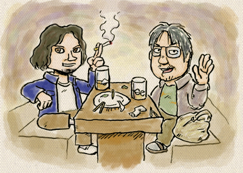

質疑応答形式なブログ
Q あなたは誰ですか？
A お疲れ様です、倉島と申します。
お初キャラの私ですが、projectOでは主にモンスターなどのデザインや
キャラクターデザインのネタだしや、缶ジュースや菓子パンを
買ってきたりしています。
つたない文章ですが、怒り出さないで下さい。
これでも必死です。
よろしくお願いします。
Q まずは、この企画に参加した経緯を簡潔に
A 簡潔にですか？
昨年の夏も終わり頃、新宿の坐・和民に木村＆皆葉氏に呼び出されました。

二人とも完全に酔っ払っており、目も据わっており、つまみももう無く、
野菜が活躍するゲームのお話をしていました。
その会話に対して噛み付いた記憶はまったくないのですが、
どうやら激しく駄目出ししたらしいです。
といった感じで、ミーティングは既に始まっていたみたいです。
ディティールはあまり覚えていません。
なぜなら、多分一番酔っていたからです。
Q ああ、そうですか
それでは、お二人との出会いをお聞かせ下さい
A 木村Ｐはスクウェアの同期社員でした。
席が隣で、初めて使うパソコンの使い方を一から教えてくれました。
ああ、いい奴だなあ と思っていた数日後、
背中にものすごい数の穴だらけＴシャツを着てきたので
「どうした？散弾銃で撃たれたか？」
などと冗談まじりに話しかけると
「おまえは見かけだけで人を判断するのか！」
と、猛烈に激怒されたのを覚えています。
あの時はドキドキしました。
皆葉くんとは、同じくスクウェアの半熟英雄（ＳＦＣ）の開発に携わっていた頃にくちびる騎士（ナイト）というダジャレキャラのドット絵を描こうと四苦八苦していた時に風の様にヘルプで現れ、鬼の様に上手いドット絵で描き直してくれました。
上手すぎてビビリました。これは努力しても敵わないなぁ と妙に納得しました。
そして風の様にＦＦチームへ去っていきました。
Q 長いですね
それでは、和田社長の印象をお聞かせ下さい
A え？ すみません…
えと わたし、それ程和田さんご存知ないのですが
実はちょっっとだけチュウリップに関わっていたので、
飲みの席などで何度か御一緒させていただいた事があります。
おそらく、今までお会いした人の中で一番の好印象で温和な方です。
でも、ゲームに対する情熱は並々ならぬ熱いものを感じました。
Q 話は戻りますが、projectOはどんなゲームですか？
A 戻りましたね。流れがつかめません。
それは、まだ色々と書けないことが仰山で難しいのですが、
なんだか面白そうなゲームですよ。
すみません他人事のように書きましたが面白くなりそうで、私も期待してます！
Q なんだか要領を得ませんね 大丈夫ですか？
では、このゲームへの意気込みを
A そうですね、実は3Dのゲーム開発は初体験なのです。
常に現場で2Ｄのデータをいじってきた人間なので、
３Ｄモデルデザインの指示書などに不備な点も多いかと思いますが、
なるべく生温かい目で見守ってください。必死で頑張ります！
東京と福岡で現場は離れてはいますがビジョンを共有して
良いものを作りましょう。
あまり熱いお話は書きなれていないので、ちょっとこのブログでは
浮いた存在ですね。
ちなみにシラフです、失敬。
Q 最後に一言
A そう言えば祥ちゃん、福岡で合宿する話はどうなっとるの！？ まだやろか？
（以上、自問自答のブログでした）
公の場では言うことのできないことを言っていい場所と聞いてやってきました。
PROJECT O（仮称）のキャラクターデザイナーの皆葉英夫です。
このPROJECT O（仮称）と呼ばれるこの作品、続編モノではないオリジナル作品なんです。…えぇ、多分ここを覗きに来られてる方は皆さん御存知のことだし、今更私が言うことではないと思いますが…。マーベラスさんも思い切ったことをしますよね。尊敬します。
「オリジナル＝つまらない」なんてことは無いのに、前述でそうのたまうくらいオリジナル作品は売れてないのですよね（例外ももちろんありますが）。
私は作り手なのと同時に、一ファンでもあるので、そんな今の時代にオリジナルを出すということを不安視したりもしています。大枚はたいてショップで購入して、あげく思ったものと違う！または楽しめない！
なんてことはざらで良くある風景。かといって、続編なのに続編の意義が見出せないものばかりやってても、安定して遊べるけど飽きてしまう。年間に数十本とゲームを買っても、結果これだと思った当たりソフトは数本だったなんていうことって、私だけなのか？！
そんなときに
「こんなの作ってるんやけど…」
いつもの、半分は子供の楽しむような、もう半分は人を騙くらかすような独特の口調で、このPROJECT O（仮称）の説明を木村Pから受けました。
オリジナル作品のプレゼンだと普通、このジャンルの占める売り上げ分布…とか、購買層は…とかとか、その手のことはまったく無しに、「ミクロとマクロが、ね」とか、聞いたことのないような、妖しげで、尚且つ新しいその内容で、いつもゲーム雑誌を読んで、こんなこと書いてあってもダマサレナイぞ！という一ゲームファンの心が、経営者という上っ面を抑えて表に出てきて、気が付けば露店で青いヒヨコを覗き込む子供が如く話し込んでいる自分がいました。
すべてが新しくても、遊ぶ側がルールを把握できなければ意味がないので、今回はここまでというのはあろうけど、遊ぶ側として遊びたいのと、作り手側として次はこう、次はこれ、と、未来を通して遊ぶビジョンと作るビジョンが見えてくる良いゲームになりそうだという手ごたえを感じてます。
ゲームは商品であり作品である。
作り手のジレンマとして常に存在し続けます。きっと、今どちらの方に転んでいくのか、それとも程よいバランスで成り立っていくのか、作る人売る人、買う人遊ぶ人それぞれに問われているような、そんな気がします。
あれ？！適当にお茶を濁して以下省略で終わらせようと思ってたのに、まじめな内容になってしまった！
木村さーん、ところで福岡ミーティングどうなったのでしょ？
オスッ！
木村です。
和田EP！
今後ともよろしくお願いします！！
>てなわけなので、ちゃんとするにはどうしたらいいのか？あるいはどう考えているのか？
>もっともっといいゲームを作るには実際の所どうしたらいいの？
>経験値つんでレベルアップして、立場も変わってきてどうなんすか？
>ねえキムＰ、もういいからさ。
>その辺のところ、思う存分語ってください！
さて、和田さんから「ゲームをつくるにはどうしたらいいのか！？」との問いかけ。
実は私なりに、今回は答え（方針）をもって、つきすすんでいます。はい。
いままで、ゲームの完成度をあげられなかった自分のプロジェクトを
ふりかえって・・、色々考えをめぐらせて、
やっととりまとまったステップが３っつ。
それは「ルック」と「プロトタイプ」と「モニター」なのです。
当たり前といえば当たり前の話ですがこの段階をですね・・。ごにょごにょ。
・・・・とっ、ちょっとまった。
この話しはちょっと長くなるので、おいておきましょう。
それよりも、ちょこっと予告をしておきたい。
☆ ☆ ☆ ☆
ここで臨時ニュースです（笑）
今週号の5.25ファミ通にて、
”PROJECT O 続報”が出ます！
そして、キャラクターデザイナーの両名、ファミ通で激白！？
みなさんお楽しみに！
そしてそして、
次のブログ更新からは、
ファミ通で激白した二人の裏話トークが！？
乞う御期待！！
こんばんは、お久しぶりの和田です。
お久しぶりになってるのはテンションが下がったんじゃないの
って思われがちですが、実は滅茶苦茶テンションアガってますよ。
ただーし、それと同じぐらいにアガってるのを垂れ流すのは
やめよ♪って思っていたりします。
いつまでもフィーリングが子供ってのは素敵なことだと思うけど
大人がかっこ悪いと思ってるのは子供の特権なんですね。
いい年こいた大人が、俺は純粋だって言って
子供ぶってるのは相当かっこ悪い。
だから、どうしてもかっこつけたい私としては、大人ぶってみます。
それがホントにかっこいいかどうかは、世界の果てにおいときます。
さて、前回の流れを受けて、ちょっとだけ反省しちゃおうかな。
キムＰは気を使ってくれてるけど、やっぱぬるかったんだろうなぁ
って思ってます。「作品は監督のもの、だから意思を尊重する」ってのは、
ある意味そうなんだけど、やっぱ逃げてる。実際の所は。
立ち向かわないとプロデュースとは言えないってのがホントのところ。
即死はまずい！って実は開発中にも言ったんだけど、
言っただけで戦ってなかった。
多分それは作家性を尊重したというよりは、戦いたくなかったんだと思う。
だから現場で切羽詰ってた監督にとっては、
言ってないのと同義なんですね。多分。
璧は磨かなくても本物であれば、それはそれで美しいものです。
ただ、磨けば磨くほどそれはもっともっと光り輝く。
その光は見る人の心を動かすし－なんとも幸せなことに－ものづくりを生業と
できている立場にいる人は、磨く、戦う義務があると思うのです。
ゲームを作っている人たちって言うのは、たいていゲームが好きです。
愛していると言ってもいいかもしれない。
みんながみんなそうじゃないかもだけど。
だからこそなんだけど、自分たちが今作っているゲームに対してどうなんだろ
っていうのは、だいたい分かっているんですね。
もちろん、感覚が麻痺しってしまったり、勘違いしてしまったりということも
それはそれで、ままあります。
だったら、ちゃんと面白く作れよっていうことなんですが、
それがなかなか難しい。
単純に時間とか技術、物量の問題もあります。
もしくはアレを立てればコレが立たずみたいな、
常に付きまとう問題もあるんだけど、そんなことは遊ぶ人たちには
全く関係のない話なので、それをことさらに言いたいわけではありません。
オカルトな話でなんともはや恐縮ですが、作品、あるいは商品でもいいです。
さまざまな「ものづくり」から生まれた「プロダクツ」には
絶対に「魂が宿る」と思うのです。
そして、その「魂の濃度」には、幸か不幸か明らかに
「差」が生まれてしまいます。
ゲームって言うのはどんなものでも産みの苦しみがあります。
意外かも知れないし、そうでもないかもしれないけど、
どんなクソゲーも決して簡単に出来上がっていないし、
魂が宿っているということです。
でも、それでも。ダメなものはダメなんですね。
そして僕らはダメなものを作ってはいけない。
多分－といってもそれは確信に近いんだけど－濃度の差っていうのは
極稀にある天才的な個人の才能をのぞくと、
どれだけ戦ったかにかかっていると思います。
あるいは我を通したか。
それは何もものづくりの中心になるクリエイターに限った
話ではありません。開発でも制作でも宣伝でも営業でも。
もっというと遊ぶ人でさえ。
プロダクツにかかわる全ての人が、自分に正直に、まっすぐに。
我を貫いてぶつかり合ったかどうか。何事も無ければ日々は
のほほんと過ぎていくのに、どれだけめんどくさいことをやれたか。
我がぶつかり合って、そぎ落とされて、こぼれて。
こぼれちゃった我は知らないうちにプロダクツに振りかけられて、注入されて。
そんなことの積み重ねが魂を濃くしていくんですね。きっと。
そうやって濃くなった「もの」は絶対に「いいもの」だと。
ゲームってホントに面白くって。
思いつく過程でも、作る過程でも、売る過程でも。
なんとそれだけじゃなくて－－ここがホントに面白い所なんだけど－－遊んだり、
遊んでもらってりする過程でも常に魂が濃くなっていくものなんですよね。
素晴らしい！なんてしあわせなことだろう。
みんなでどんどん良くしよう。
分かり合うこと、譲り合うこと、それは成し遂げるためには凄く大事なこと。
でも、そのために黙らないようにしよう。気はあとから使おう。
そして、そのこと自体をホントの意味でみんなが分かり合えたときこそ、
ダメなものができるわけが無い。絶対そうだと思います。
なんだかんだ、たくさんのつまらない文字を、それほどでもない言葉を使って
何が言いたかったのか。。。
読み返してみたら、キムＰが前に、一つ前に、書いたことと同じことでした。
お粗末過ぎるけど、今の僕に書けたのはそんなこと。
凄いことを言おうって気負わなくていいと思うんですよ。
大事なことはちゃんと向き合うこと。そしてそれを表明すること。
言ったり書いたりすることが苦手な人は態度で表せばいいと思う。
とにかくコンタクトですね。フルでもいいし、ソフトでもいい。
一人で出来ないことはそうやって進めていくしかない。
はい。この辺でやめときます。ご想像のとおり、酔っ払ってきた。
プロジェクトへの想いとか、他の仕事のこととか、ゴッチャになって
冒頭に書いたのと真逆に垂れ流してしまってます。すみません(>_<)
ダメなんだよなぁこの辺が。
てなわけなので、ちゃんとするにはどうしたらいいのか？
あるいはどう考えているのか？
もっともっといいゲームを作るには実際の所どうしたらいいの？
経験値つんでレベルアップして、立場も変わってきてどうなんすか？
ねえキムＰ、もういいからさ。
その辺のところ、思う存分語ってください！
お疲れさまです。木村です。
イギリスかぁ懐かしいな。古着屋によくいったなぁ。ねっから貧乏性なんで、どこいっても古着屋にいきます。よくジャケットとかコートとか買いました。へんな帽子とか。
・・・・と、前置きはこれくらいにしてですね。
和田さん！ひどい！僕そんなに何回もシナリオかえてないですよ！
どんどん変えてたらさすがに開発できません。
うーん、でも、あえていうなら、たしかに１回かえました（汗）。
スケジュールがぱんぱんで、マップをきらないと入りそうになかったんで、
バサっときって、話しを短くしました。超どでかい刑務所をまるごと「なし」ときめるのが自分でもいたいたしかったです。でも、あれで、物語がスリムになっておもしろくなったとおもうな！
＊＊＊＊ＣＨＵＬＩＰ反省会開始＊＊＊＊
・・・でもね、まぁそれはそれでよしとして、じゃぁ、僕がチュウリップの作り方や結果に満足しているかというと、違うんですよね。どちらかというと、反省要素ばっかり。
・・・で、そのなかでも一番反省点だとおもったのは
当時のプロデューサー和田とディレクター木村のやりとりでしょうね。
なんていうのかな、「あんまり議論がなかった」という感じがすごくしてます。
たとえば、チューニングの話一つとっても、いい感じで議論した記憶が皆無なんですよね。
これってなんだろう？和田さん、この記憶ってひどいとおもいません？
＊
どちらかというと、こんな感じ。
「なんで、和田さんって何にもいってこないのかなぁ？」
「メーカの検収って・・・もっと注文されるもんじゃないのか・・・。言いたいこと
言ってくれてるのかな！？」
「なんで、最後の最後、直せないタイミングでいってくるんだ！」
・・・などなど。残尿感をのこしつつ、終わる。
＊
・・・そのあとしばらくしての話です。チュウリップの開発がおわって１年、酒場でのんでるときに、色々、和田さんが感じてたことやアイデアを聞いて、すごくせつなかったのをおぼえています。
「えー！？そんなこと考えてたんですか！？」みたいな。「えー！？それだったら、ダメージうけてもHPが１でぎりぎり生き残るようにルーチンつくればよかっただけじゃないっすか？！」「そんなの簡単ですよ！」みたいな。
和田さんと開発中ちゃんと、言い合いしてたら、すぐに解決方法を思いつくようなことばかり。「な・・なんで、１年してから聞いてるんだ・・俺は・・・・」みたいな。
この話しが悲しいのは、どんな事情があるにせよ、コミュニケーションレベルが低かったという流れになっちゃったってこと。
僕は和田さんが売り方を考えてくれてると思ってたし、そういう方向からの意見があるならいってくれると思ってた。
和田さんのほうは、木村ワールドで自由にゲーム内をつくりきってくれればいいと思っていたわけです。
なんていうか、これ「失敗」
当時の和田Pがディレクターを尊重してくれていて、作品を作家性の強いものにするために見守っていてくれたというのは良いんですが、
なぜか、それは「失敗」だった。
これって、お互いにリスペクトしてたからこそ、相手の領域にはいらないようにしてたんじゃないかと思うんですよね。ところが、それは失敗だったと深く思うんですよ。最近は。
うーん。リスペクトしているなら、お互いがお互いのやりたいことを、ぶつけあった
ほうがよいんですよ。絶対そうおもうな。
ディレクター的にはこうしたほうがよい。
プロデューサー的にはこうしたほうがよい。
宣伝的にはこうするほうがよい。
営業的にはこうするほうがよい。
開発的にはこうするほうがよい。
キャラデザイナー的にはこうしたほうがよい。
モデリング班的にはこうしたほうがよい。
雑誌的にはこうしたほうがよい。
全員が全員、別の役割で動いていて、それぞれがかみ合うのって本当に大変だと思う。だからこそ、それぞれが主張して「こうしたほうが作品のために、ｘｘｘ担当者としてはベターだと思うんですが」というぶつかりあいをやったほうがよいのです。たまには喧嘩とかにもなっちゃうんでしょうね。でも、それでいいんじゃないかなと思います。僕は作品（商品）のためなら、とことん、やりあいたいな。
＊＊＊＊ＣＨＵＬＩＰ反省会終了＊＊＊
絶対的にいえるのは“作品は作家のもの”です。
でもふと、それにかかわるいろいろな人たちを想像するとですね。
“商品になったとき作品は作家だけのものではない？”なんて思うんですよね、最近は。
とにかく、そういう意味では、今回の作品に関係する人々全員に言いたい。
「こうしたら面白いぞ！」「こうしたほうが、作品がよくなるぞ！」という意見でお互いぶつかるなら、それは痛くても苦しくても、よいことです。
相手を気づかうよりも、まず自分の角度から主張するほうがよいことなのです。
気づかいやダキョウはそのあとしてください。作家は傲慢であってください。プログラマーもデザイナーも傲慢であってください。宣伝担当さんも、営業さんも、まっすぐ意見をぶつけてきてください。するとそのあと、痛いくらの言い合いになることもあるだろうけど、うちのめされることもあるけど、それはいいんじゃないのかな。作品のためによい結果がでればさぁ。
福岡のみなさん、東京のデザイン班のみなさん。宣伝担当さん、海外ライセンスアウトのみなさん、みーんな、「こうしたほうがよい」っていう意見はいつでもぶつけてきて。
すごく大事だから。
うーむ。なんかまじめに書いてしまった。ちょっと長いし。しかもただの正論ぽいことかいてるし。なんか、酒飲んだあとだからかな。最近、自分にとって難易度の高い出来事が仕事にまじってきているので、発散したいのかな。よっぱらいぎみの木村でした。
※うーん。和田さん次よろしくおねがいします。
えー、和田さんが次、書いた後になりますが、今回のゲームづくりの流れとか、もうせきららに、何を実験して、どんな仕様書つくってとか、書いちゃおうかとおもうんですがどうですかね。
ちょっと、やりすぎですか？うーんやりすぎか。やりすぎかもな。
でも開発ブログだしもうそろそろ、そういうのもいいっすよね～。どうすっか！？


 クリエイターズBLOG トップ
クリエイターズBLOG トップ